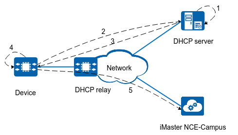
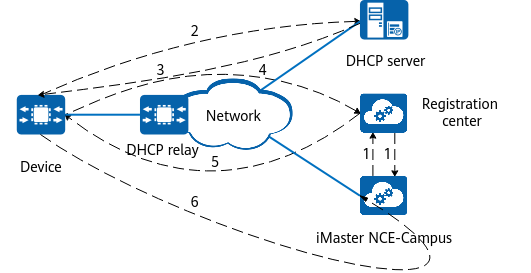
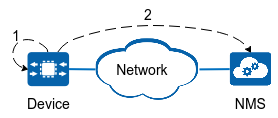

Establishing a NETCONF Session
A device can establish a NETCONF session with both iMaster NCE-Campus and a third-party NMS. A NETCONF session between a device and iMaster NCE-Campus can be established in either ZTP or CLI mode. However, a device can establish a NETCONF session with a third-party NMS only in CLI mode.
In a NETCONF session, the device functions as a NETCONF server, and iMaster NCE-Campus or the third-party NMS functions as a NETCONF client.
Establishing a NETCONF Session in ZTP Mode
ZTP can be deployed using DHCP options or the registration center.
DHCP Option-based deployment: A device with default configurations obtains Option 148 information (iMaster NCE-Campus server information) from a DHCP server through ZTP deployment, thereby automatically establishing a NETCONF session with iMaster NCE-Campus.
Figure 1 Establishing a NETCONF session using DHCP options
- Configure DHCP Option 148 on the DHCP server. Option 148 is in the format of agilemanage-mode=ip;agilemanage-domain=ip1&ip2;agilemanage-port=port1&port2;agilemanage-backup-address=ip3:port3.
- agilemanage-mode: indicates whether the device obtains the URL or IP address of iMaster NCE-Campus. agilemanage-mode=domain indicates that the device obtains the URL, and agilemanage-domain is set to domain-name accordingly. agilemanage-mode=domain indicates that the device obtains the IP address, and agilemanage-domain is set to ip-address accordingly.
- agilemanage-domain: indicates the URL/IPv4 address of the active iMaster NCE-Campus server. You can configure one or more IPv4 addresses. Use ampersands (&) to separate multiple IPv4 addresses.
- agilemanage-port: indicates the port number of the active iMaster NCE-Campus server. You can configure one or more port numbers. Use ampersands (&) to separate multiple port numbers.
- (Optional) agilemanage-backup-address: indicates the IPv4 address and port number of the standby iMaster NCE-Campus server.
- Upon startup, a device with default configurations sends a request packet to the DHCP server.
- After receiving the request, the DHCP server returns a DHCP response packet containing Option 148 to the device.
- After detecting that the response packet from the DHCP server carries Option 148, the device enables NETCONF and proactive NETCONF registration, creates an SSH user (huawei), and obtains the IP address and port number of iMaster NCE-Campus.
- The device uses the obtained IP address and port number of iMaster NCE-Campus to establish a NETCONF connection with iMaster NCE-Campus.
If a DHCP server and a device are on different network segments, a DHCP relay agent is required to forward DHCP packets.
Registration center-based deployment: A device with default configurations obtains the controller address from the registration center through ZTP and automatically establishes NETCONF sessions with iMaster NCE-Campus.
Figure 2 Establishing a NETCONF session through the registration center
- After the administrator imports new device information, such as the device ESN and device type, to iMaster NCE-Campus, iMaster NCE-Campus sends a request to the registration center to upload the information. After the request is received, the registration center and iMaster NCE-Campus perform bidirectional authentication to establish a connection. Once the connection is established, iMaster NCE-Campus can upload the ESN of the new device and the corresponding iMaster NCE-Campus and Bootstrap information to the Huawei registration center.
- Upon startup, a device with default configurations sends a request packet to the DHCP server.
- The DHCP server sends a DHCP reply packet to the device. The device parses the reply packet. If the packet does not contain Option 148, the device enters the ZTP process in registration center mode in a controller scenario.
- After entering the ZTP process in registration center mode in the controller scenario, the device accesses the Huawei device registration center through the preset Huawei registration center URL (register.naas.huawei.com) and port number (10020).
- After receiving the reply packet from the registration center, the device enables NETCONF and proactive NETCONF registration, creates an SSH user (huawei), and obtains the IP address and port number of iMaster NCE-Campus.
- The device establishes a NETCONF connection with iMaster NCE-Campus.
Establishing a NETCONF Session in CLI Mode
A NETCONF client proactively establishes a NETCONF session with a NETCONF server.
Configure an SSH user on a NETCONF server (device), enable NETCONF, and wait for a NETCONF client to trigger the establishment of a NETCONF session. The NETCONF client uses the SSH username and password configured on the device to establish a NETCONF connection with the device.
A NETCONF server proactively establishes a NETCONF session with a NETCONF client.
If an NMS does not support automatic device discovery, it cannot manage devices as soon as they go online. In this case, the NETCONF server (device) must proactively establish a NETCONF session with the NETCONF client (NMS). You can enable proactive NETCONF registration on the device to enable the device to proactively establish a NETCONF session with the NMS.
Figure 3 Establishing a NETCONF session between a device and an NMS by enabling proactive NETCONF registration
- Configure an SSH user and enable NETCONF and proactive NETCONF registration on a device.
- The device proactively establishes a NETCONF session with the NMS.